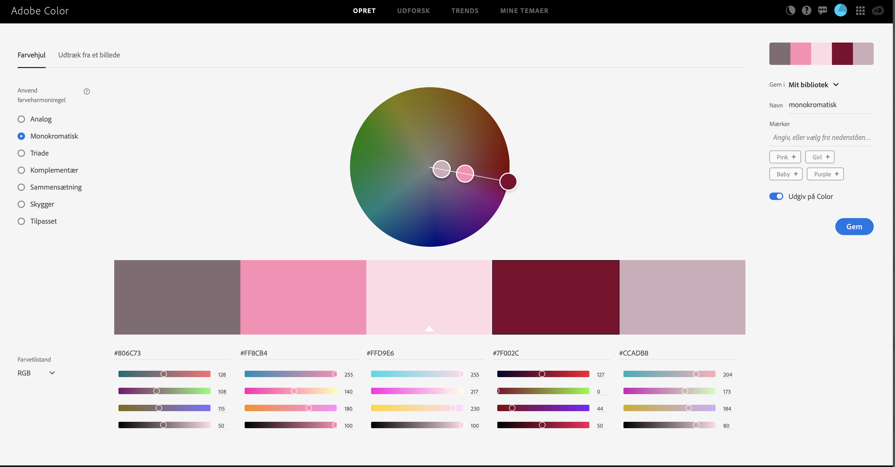

Mine farvevalg er baseret på en monokromatisk farvepalette, som jeg har lavet på Adobe Colors hjemmeside. Monokromatisk betyder "ensfarvet". Jeg ville gerne selv designe min forside ved at tegne ting, jeg går op i. De elementer har jeg så lavet i lyserøde toner ud fra min farvepalette, som jeg også har brugt til overskrifterne.
Google font: oswald Font-size: 5rem; Color: #7F002C
Dette er en H3 markeret med strong tagget
Google font: Muli Font-size: 1.2rem;
Google font: oswald Font-size: 3.5rem; Color: #806C73
Brødtekst (paragraph)
Google font: muli
Line heigth:1.3;